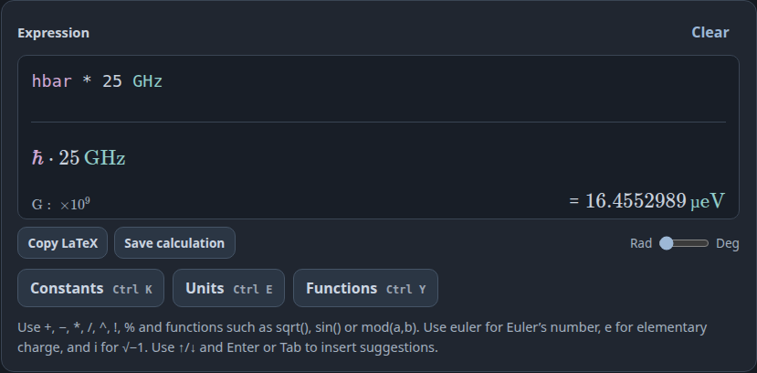
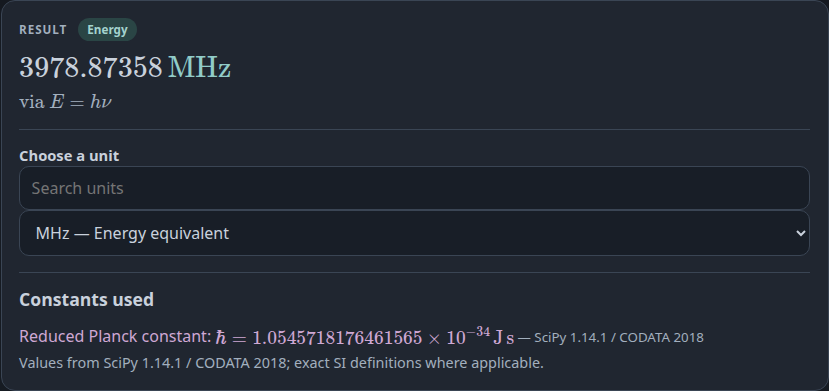

Calculator guide
Enter an expression. The calculator shows its formatted form and result as you type.

Calculate
7/8,2*(3+4),2^3,5!,50%andmod(11,3)work as expected.- For scientific notation use uppercase
E:1E6or1E-3. Lowercaseeis the elementary charge;euleris Euler’s number. - For complex numbers use
i, for example(2+3i)*2.
Units and constants
- Write a unit next to a number:
10GHz,2 kgor3 m/s. Prefixes such asm,k,G,u,muandµare supported. - Examples:
hbar * 25 GHz,k_B * 300 Kand2 kg * 9.81 m / s^2. Used constants and their values appear below the result. - Other examples include
1 in,1 gal_US,1 gal_UK,1 F,1 Gand1 kcal. US and UK volume units have separate names. - Dimensions must match when adding or subtracting.
5V / 10Adivides two quantities;5V / 10 Amultiplies by A after division. Parentheses make the order explicit. - On a keyboard, use Ctrl K for constants, Ctrl E for units and Ctrl Y for functions. You can also type a name and select a suggestion; use ↑/↓ and Enter or Tab on a keyboard.
- On a small screen, use the operator and arrow keys below the expression to insert symbols or move the cursor while keeping the keyboard open.
Choose an output unit
- Search under Choose a unit, or append
eq:10 m / 2s eq km/horhbar * 25 GHz eq meV. Typeeqto see it in suggestions, then type the desired unit. - Energy equivalents work both ways:
1 eV eq GHzand1 GHz eq eVuse E = hν;1 rad_s eq eVuses E = ħω. The result shows the relation and constants. OrdinaryGHzis a frequency;GHz_energy,rad_s_energy,K_energy,T_energyandnm_energyare energy equivalents in input. - The output selects readable SI prefixes automatically for base units; a prefix explicitly entered after
eqis retained.

Functions and angles
Use parentheses, for example sqrt(9 m^2), sin(90) or pow(2,3). Select Rad or Deg for trigonometric functions; explicit angles such as sin(90 deg) work in either mode.
Available functions: sqrt, sin, cos, tan, asin, acos, atan, sinh, cosh, tanh, ln, log, exp, tenpow, abs, re, im, conj, arg, floor, ceil, factorial, mod, pow, recip and percent.
Temperatures
Use 20 degC or 68 degF for absolute temperatures and deltaC or deltaF for differences. For example, 20 degC - 10 degC gives a temperature difference. Absolute Celsius and Fahrenheit values cannot be multiplied or divided.
Save and reuse
Copy LaTeX copies the expression as LaTeX. Save calculation stores it and the selected result unit in this browser on this device. Select a saved expression to restore it, or choose Use result to append its result to the current expression. Clear clears the expression.